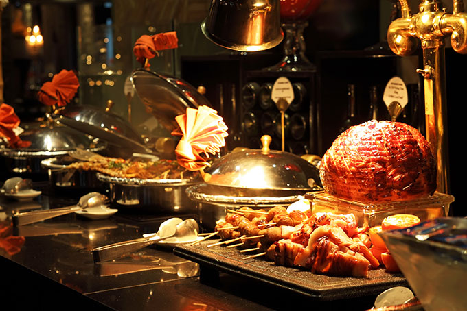

<html>
<head>
       <meta name="viewport" content="width=device-width, initial-scale=1.0">
       <link rel="stylesheet" type="text/css" href="./ToanpdFX15532 ASM4 nhahang.css">

       <!-- Global site tag (gtag.js) - Google Analytics -->
<script async src="https://www.googletagmanager.com/gtag/js?id=G-VFHEGBPYZR"></script>
<script>
  window.dataLayer = window.dataLayer || [];
  function gtag(){dataLayer.push(arguments);}
  gtag('js', new Date());

  gtag('config', 'G-VFHEGBPYZR');
</script>
</head>
</html>


<header>
       <div id="menu" id="menutable">
              <ul>
                     <li class="limenuleft"><a href="./index.html"> <strong>TRANG CHỦ</strong></a></li>
                     <li class="limenuleft"><a href="./ToanpdFX15532 ASM4 khuyenmai.html"><strong>KHUYẾN MÃI</strong></a></li>
              </ul>

              <ul>
                     <li class="limenuright"><a href="./ToanpdFX15532 phuongtiendilai.html"><strong>XE ĐƯA ĐÓN</strong></a> </li>
                     <li class="limenuright"><a href="./ToanpdFX15532 ASM4 khachsan.html" > <strong>KHÁCH SẠN</strong></a></li>
                     <li class="limenuright"><a href="./ToanpdFX15532 ASM4 nhahang.html"><strong>NHÀ HÀNG</strong></a> </li>
              </ul>
       </div>

       <div id="banner">
              <div class="hinhanh"></div>

              <div class="khung">
                     <div class="chu">
                            <h1><strong>TOP 3 NHÀ HÀNG NGON NHẤT TP HCM </strong></h1>
                     </div>
              </div>
       </div>
</header>


<body>
       <div id="danhsachanh">

             
              <div class="col-12   col-s-12  col-d-12  box">
                     <h2> Chuỗi nhà hàng Phố 79 - Thương hiệu Ẩm thực gần 10 năm với sự sang trọng, đẳng cấp từ không gian tới món ăn  </h2>
                     <p>Phố 79 – hiện thân của tầng cao ẩm thực xa hoa, cao cấp đương đại sẽ mang tới cho thực khách hơn 300 món ăn đặc sắc, quy tụ ở nhiều vùng miền trên khắp Việt Nam, từ những món ăn gần gũi, thân quen đậm đà hương vị Bắc Bộ, những món ăn hải sản cao cấp đến sashimi chuẩn vị Nhật, tất cả chứa đầy một nghệ thuật dinh dưỡng giá trị. Không gian sang trọng mang âm hưởng hoàng gia cùng hệ thống sảnh tiệc rộng lớn, phòng riêng đa dạng sức chứa rất hoàn hảo cho những bữa tiệc chiêu đãi, hội họp, tiệc sinh nhật – thôi nôi, tiệc báo hỷ. </p>
                     
              </div>

              <div class=" col-12  col-s-12 col-d-12 box">
                <h2>  Chuỗi Wrap & Roll – Gói trọn tinh hoa ẩm thực Việt </h2>
                <p>Sở hữu thực đơn gói và cuốn mang hương vị đặc trưng của 3 miền Bắc - Trung – Nam, Wrap & Roll từ lâu đã trở thành chuỗi nhà hàng ngon nổi danh ở Sài Gòn. Với đủ các món từ cuốn khai vị, món cuốn chính rồi cả cơm, bún, phở, lẩu, đồ ăn kèm và chè hoặc nước thảo mộc tráng miệng, nhà hàng chắc chắn sẽ cho bạn một trải nghiệm khó quên. </p>
                
                     
                     
             </div>

              <div class=" col-12  col-s-12 col-d-12 box">
                <h2> Red Chilli Seafood Buffet - CHLOE Gallery- 2 Phan Văn Chương, Phường Tân Phú, Quận 7 </h2>
                <p>Tọa lạc bên hồ Bán Nguyệt quận 7, nhà hàng Red Chilli Seafood Buffet - CHLOE Gallery (Charm Charm cũ) như một lâu đài cổ trầm mặc trong ánh chiều tà đầy quyến rũ khiến mọi ánh mắt đều bị hút vào trong đó. Không chỉ có vậy, nhà hàng Red Chilli Seafood Buffet - CHLOE Gallery còn hút hồn thực khách nhờ thương hiệu tiệc Buffet Red Chilli Seafood Buffet - CHLOE Gallery mang đẳng cấp hoàng gia của mình với thực đơn món ăn phong phú đến từ nhiều nền ẩm thực trên thế giới.

                </p>
                
                     

              </div>
       </div>

</body>


<footer>
       <div id="bangfooter" class="row">

              <div class="col-4 box">

                     <h3>Du lịch</h3>
                     <p>NgoKhong dulich là blogger chuyên viết về du lịch đã được 3 năm, rất hân được dẫn dắt các bạn trên hành trình khám phá Việt Nam</p>
                     <p class="link"><ins> Facebook của mình </ins></p>

              </div>

              <div class=" col-4   box">

                     <h3>Cộng đồng</h3>
                     <p> Cộng đồng của mình sẽ hỗ trợ bạn trên mọi nẻo đường, mong bạn đừng lo lắng và tận hưởng cuộc hành trình của mình</p>
                     <p class="link"><ins>Cộng đồng của mình</ins></p>

              </div>

              

       </div>
</footer>